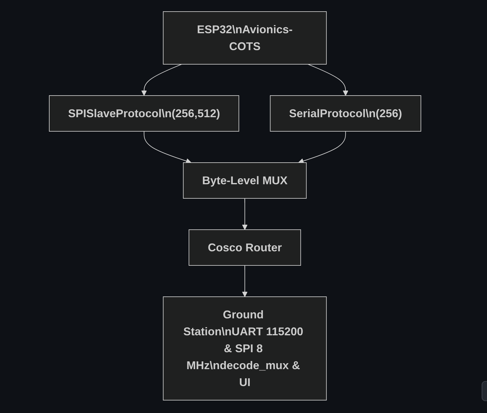

BroCo – ROS 2 Serial Bridge
Full‑duplex ESP32 ↔ ROS 2 bridge with CRC‑framed packets, enabling rover nodes to publish ROS topics over low‑bandwidth radio.
GitHub ↗

Avionics‑COTS Communication Stack
Deterministic UART/SPI stack with zero‑copy buffers and transport fail‑over, powering EPFL Xplore rover avionics.
GitHub ↗
ERC_AV_SW Flight Software
Flight‑software skeleton and CI pipeline for a rocket avionics board, including HAL drivers, telemetry, and HIL tests.
GitHub ↗
Microcontroller Experiments
Collection of low‑level firmware experiments on STM32 & ESP32—covering RTOS scheduling, DMA drivers, and peripheral optimisation.
GitHub ↗
Master Thesis — Analog Neurons
Research on physical nonlinearities for low‑power deep learning: GHz metasurface phase shifters & optical GELU emulation.
Read Thesis ↗